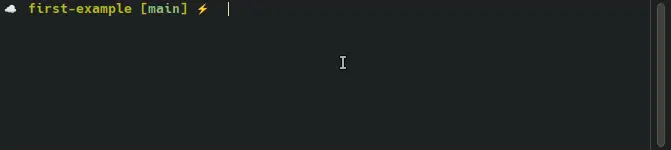
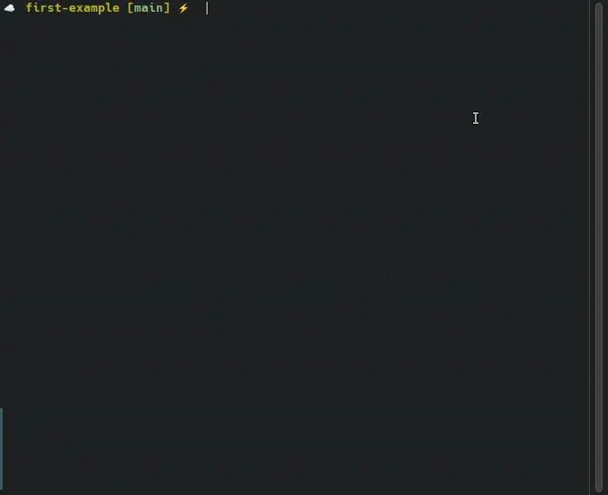
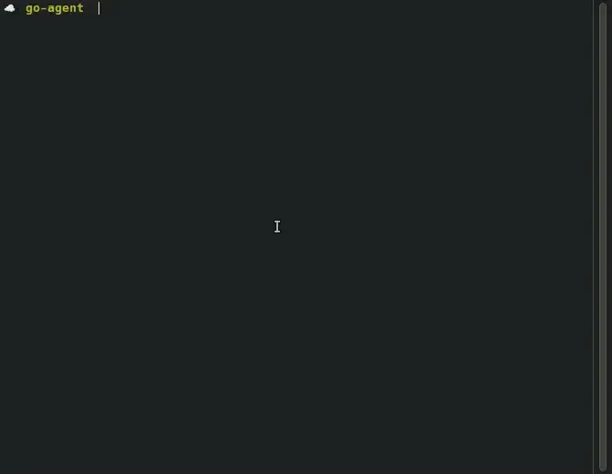

Introduction
This post is the first in a series where I'll share my personal journey of learning how to build an AI Agent from scratch using Golang. It’s heavily inspired by How to Build an Agent by Thorsten Ball, but with a different perspective and target: a more general-purpose agent rather than one focused specifically on code editing.
We'll begin with basic interactions with a large language model (LLM) and gradually progress toward a more complete AI Agent by incorporating tools, memory, MCP (Model Context Protocol), and more.
My goal is to share everything I’ve learned about how AI agents work under the hood, and to make that understanding accessible to others who are interested in the same topic.
Disclaimer: I'm not an expert in AI Agents, LLMs, ML, and AI in general. So, this series is based on my personal learning journey, and everything I share comes from reading, research, and hands-on experimentation. Use it as a learning resource. The code examples is just for educational purposes and are not production-ready.
If you see any mistakes or have suggestions for improvement, I'd really appreciate your feedback!
What is an AI Agent?
According to Google:
AI agents are software systems that use AI to pursue goals and complete tasks on behalf of users. They show reasoning, planning, and memory and have a level of autonomy to make decisions, learn, and adapt.
According to Anthropic:
"Agent" can be defined in several ways. Some customers define agents as fully autonomous systems that operate independently over extended periods, using various tools to accomplish complex tasks. Others use the term to describe more prescriptive implementations that follow predefined workflows.
Both are very clear explanations of what an AI Agent is. But to truly understand it in depth, what's going on under the hood, let's break it all down from scratch. After exploring the concepts step by step, I'll share my own perspective. Then, you'll have enough context to define what an AI Agent really means in your own words.
A simple interaction with a LLM (one input, one output)
Let's start with the most basic form of interaction: you send a message to a LLM through Anthropic API using the Anthropic SDK (you can use your preferred programming language). The API responds with a generated message.
sequenceDiagram Client (Anthropic SDK)->>Anthropic API: prompt Anthropic API-->>Client (Anthropic SDK): response
For example, you might send: "Hello, how are you?"
And the model might respond with: "I'm doing well, thank you!"
Here's what that looks like in Go:
// Set your API key as an environment variable named ANTHROPIC_API_KEY
// Ensure the necessary Go dependencies are installed
// added code to measure the timing
package main
import (
"context"
"fmt"
"time"
"github.com/anthropics/anthropic-sdk-go"
)
func main() {
ctx := context.Background()
message := "Hello, how are you?"
//message := "Can you tell me about the history of AI?"
client := anthropic.NewClient()
// Start timing
start := time.Now()
outcome, err := client.Messages.New(ctx, anthropic.MessageNewParams{
Model: anthropic.ModelClaude4Sonnet20250514,
MaxTokens: int64(1024),
Messages: []anthropic.MessageParam{
anthropic.NewUserMessage(anthropic.NewTextBlock(message)),
},
})
// End timing
duration := time.Since(start)
if err != nil {
fmt.Println("Error:", err)
return
}
fmt.Printf("Response: %+v\n", outcome.Content[0].Text)
fmt.Printf("Execution time: %s\n", duration)
}
When you run the previous code, the response might look like:

Let’s try sending another message:
Can you give me a summary about the history of AI?
Executing the code, you will get something like:

Observations
-
The response takes a few seconds to print in the console (although this is partly unrelated to the Anthropic API or its generated responses,, as we will discuss further). The first example, approximately 1.5 seconds, and the second takes approximately 10 seconds.
-
In the first example, the response is more verbose than a simple "I'm doing well, thank you!". It is because the model is trying to be more helpful and informative, but it can be adjusted by changing the prompt or the model parameters (e.g., temperature, top_p, etc.).
-
During this process,the execution appears to freeze until the response is received, especially in the second example, where the delay is more evident. This is critical, as it can result in a poor user experience and create the impression that the system is unresponsive.
In both cases, we see a simple interaction: input → output. So, is this simple interaction considered an AI Agent? You might think so, after all, you're interacting with a LLM over the Anthropic API, right? but, the short answer is absolutely not, at least, not yet!
Why not? Because the code we've used so far only handles a single interaction with no ongoing or continuous dialogue; it doesn't retain in a memory any previous messages (stateless interaction), it doesn't take any actions on your behalf, it doesn't interact with external systems, it doesn't understanding of goals, and there is not a decision-making involved. As such, this basic interaction is not sufficient to qualify as an AI agent.
Agents require continuity, reasoning across steps, decision-making, and often the ability to use tools or act in different internal or externalenvironments outside of its own context.
Let's take a pause here and improve the previous code to enhance the user experience. In the next section, we’ll explore how to use streaming to prevent blocking behavior. Note: this part isn’t directly about LLMs or AI Agents—it's related to how we handle asynchronous operations in the programming language itself.
See a preview of the results:

Seems like a good start, right?